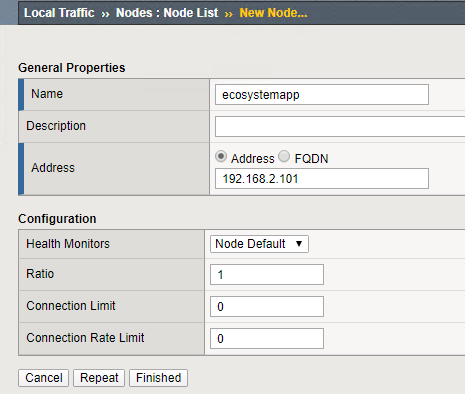
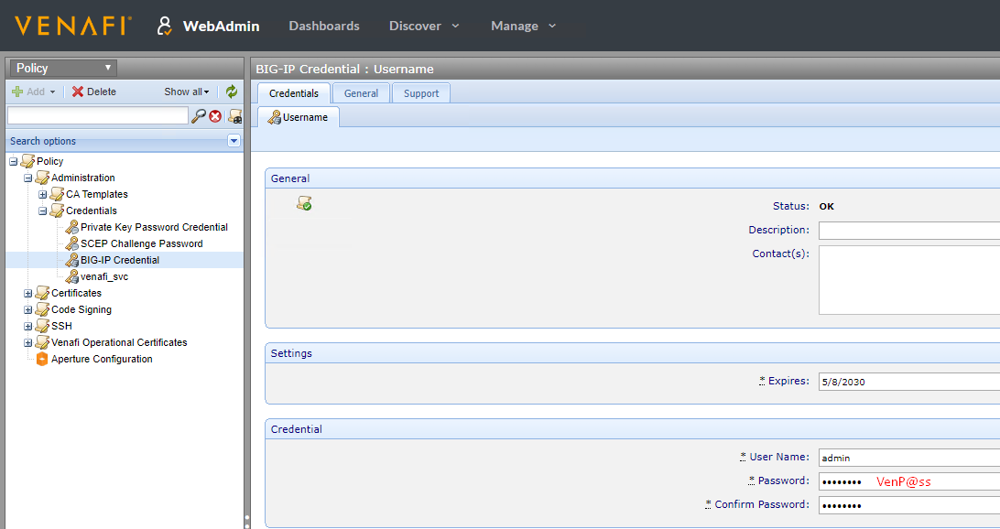
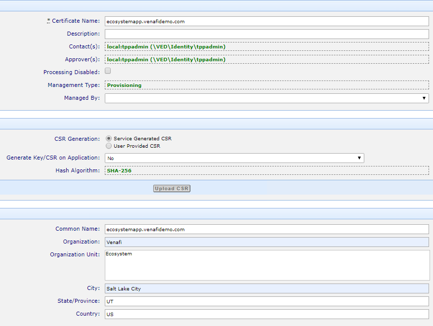
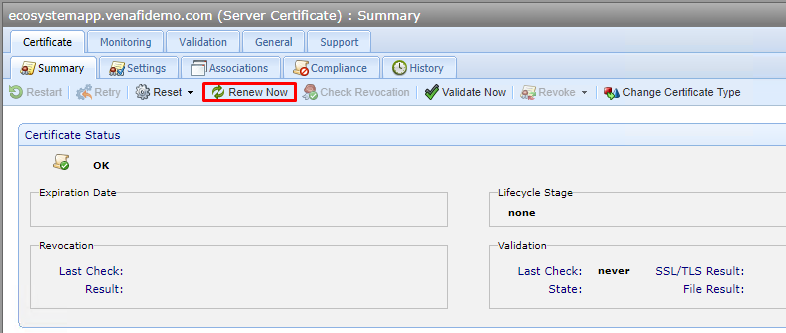
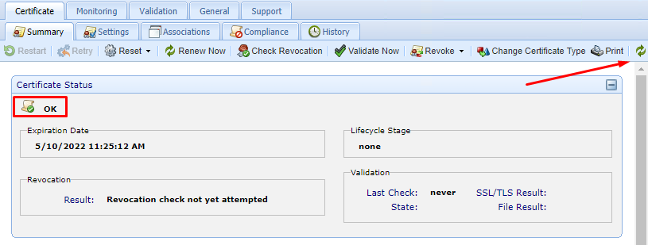
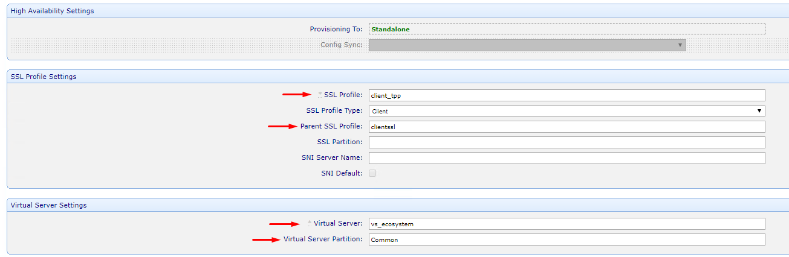
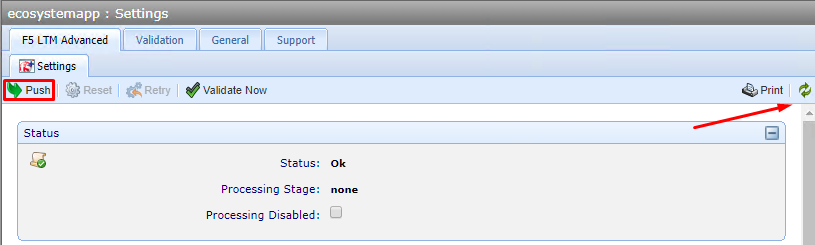
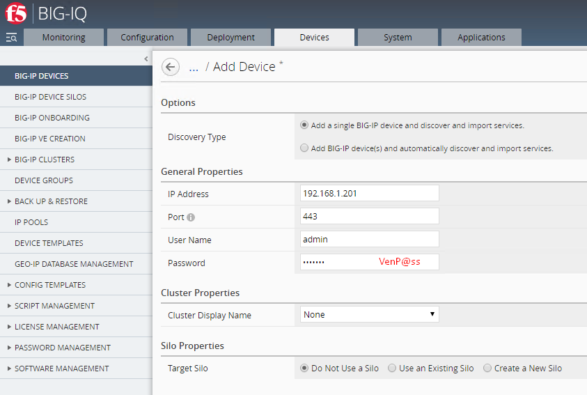
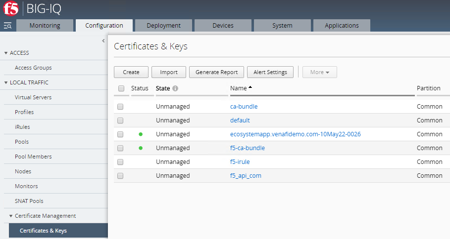
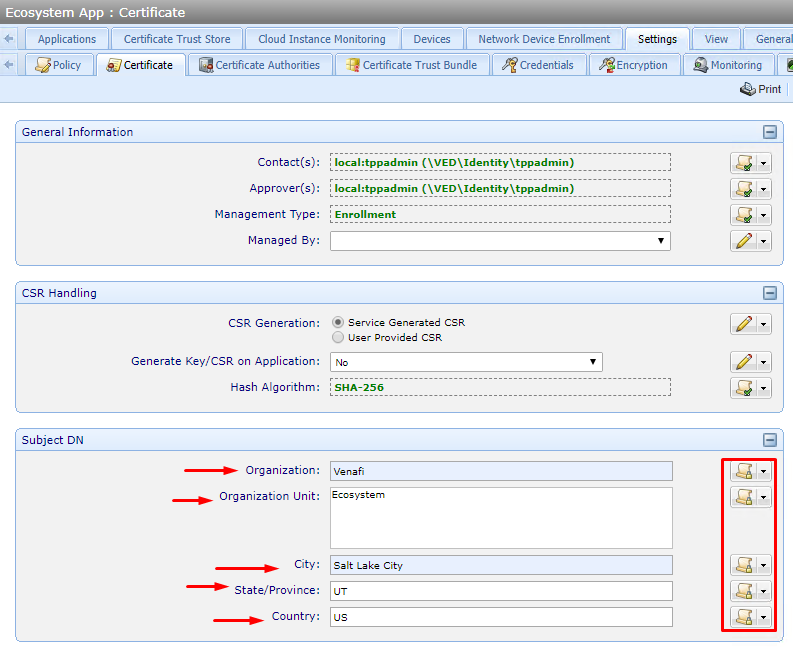

The Lab Environment
This Venafi Trust Protection Platform lab environment contains the following virtual machines that have been pre-configured with the proper networking and settings. The environment includes:
- 1x Trust Protection Platform Server (TPP 20.1)
- Microsoft Certification Authority (venafidemo-TPP-CA)
- Active Directory Domain Services (venafidemo.com)
- DNS (venafidemo.com)
- IIS Server (for Venafi GUIs)
- MS SQL Express 2016
- 1x CentOS Server (Apache)
- Minimal Install
- Apache Web Server
- 1x F5 BIG-IP Server (BIG-IP)
- 1x F5 BIG-IQ Server (BIG-IQ)
| VM | Internal IP | Internal DNS | CLI Username | CLI Password | GUI Username | GUI Password |
|---|---|---|---|---|---|---|
| BIG-IQ | 192.168.1.200 | bigiq.venafidemo.com | root | VenP@ss123! | admin | VenP@ss123! |
| BIG-IP | 192.168.1.201 | bigip1.venafidemo.com | root | VenP@ss | admin | VenP@ss |
| TPP Server | 192.168.1.100 | tpp.venafidemo.com | N/A | N/A | VENAFIDEMO\venafi_svc | 5&Njgx8IGyHQ |
| Venafi Platform | 192.168.1.100 | tpp.venafidemo.com | N/A | N/A | tppadmin | Passw0rd123! |
About This Lab
This lab walks end users through the process of configuring Venafi Trust Protection Platform and F5's BIG-IP and BIG-IQ devices to completely automate machine identities in use throughout an organizations F5 infrastructure.
- Section 1 - Automating Machine Identities with BIG-IP
- Section 2 - Transitioning from BIG-IP to BIG-IQ
- Section 3 - Deploying a new application using BIG-IQ & Venafi
Background
Issuing a machine identity today, in many organizations, can take DAYS and is often a very manual process involving change requests, tickets and lots of hands on keyboards. Naturally, that can create bottlenecks for security or PKI teams that are typically dealing with multiple product and/or application developer teams. Manual processes are also prone to human error that could otherwise be avoided by introducing some form of automation. These problems are exacerbated when organizations are using DevOps practices.
Application teams are used to speed and automation, and for good reason. They adopt tools like BIG-IQ and BIG-IP to help them deliver, secure and monitor business applications. Introducing Venafi allows administrators to get the machine identities they need to secure their applications as quickly as possible. Security teams get the visibility to see ALL the machine identities throughout the organization, and the capability to enforce standard policy over the machine identities that application teams are requesting. Application teams get to use a simple process inside their native tools. It's a win-win.
BIG-IP vs. BIG-IQ - Which should you choose?
At this point, you're probably wondering which integration makes sense for your organization. Both achieve better control and visibility of machine identities used withn F5 infrastructures, but there are a few differences to be aware of. Perhaps the number one question to ask yourself is "Which team needs to be in control of machine identities for the F5 infrastructre?"
If the answer to that question is the F5 team, then the best option is going to be BIG-IQ, because it allows F5 administrators to renew, revoke, and obtain new machine identities directly from the BIG-IQ interface, while still providing the visibility and policy controls to the security or PKI team. F5 administrators can see available Policy folders from Venafi and choose the corresponding container that makes sense for their specific application.
If the answer is the Security or PKI team, then the BIG-IP integration is able to provide that control without adding any additional burdens to the F5 admins. Tasks related to the machine identity lifecycle are all initiated automatically from Venafi. This means that Venafi Trust Protection Platform will recognize that a certificate is coming up for expiration. It will reach out to the corresponding Certificate Authority and renew the certificate. And finally, it will push the renewed certificate to the BIG-IP device and associate it with the correct profile...all without human interaction.
Accessing the Lab Environment
You should have received lab access directly from the CloudShare platform. The lab environment will be valid for two weeks and will automatically be shut down after that time. If you require additional lab time, please reach out to paul.cleary@venafi.com.
Lab Steps
Section 0 - Verify & Refresh the Lab Environment
The BIG-IQ virtual machine sometimes has issues when resuming from a suspended state. The following steps will ensure all devices and services are working as expected, verify all settings are correct and demonstrate the current configuration of the environment.
-
Click View VM on BIG-IQ.
-
Click inside the black window and press
Enteron the keyboard to wake up the CLI. -
Restart BIG-IQ by typing the following command and waiting for services to come back (about 5 minutes):
reboot now -
Click View VM on “Venafi TPP Server” and log into Windows using the following credentials:
UN: VENAFIDEMO/Administrator PW: Password123! -
Open Chrome and navigate to the “VIP – https://192.168.2.10" bookmark – this should present a familiar page, and although the page doesn’t display the certificate details, you can validate the certificate using the browser.
-
Next, validate the current BIG-IP configuration by opening the “BIG-IP #1” bookmark and logging in with the following credentials:
UN: admin PW: VenP@ss
NOTE: The management certificate for BIG-IP is also being managed by TPP. The management certificate for BIG-IQ will be self-signed.
Section 1: Automating Machine Identities with BIG-IP
An NGINX web server has already been configured in the environment. This section will walk through the configuration of an F5 BIG-IP device providing SSL termination to that application while using a machine identity from Venafi Trust Protection Platform.
Configure BIG-IP
-
Login to the Trust Protection Platform server, open a browser and navigate to http://ecosystemapp:32775 to verify the application is up and running. The Venafi Ecosystem background should be visible.
-
Next, navigate to https://bigip1.venafidemo.com from within the TPP VM to start the configuration of BIG-IP. Login with the following credentials:
UN: admin PW: VenP@ss
-
Click on
Local Traffic > Nodesand then theCreatebutton to create a new Node.
-
Fill in the node information as follows:
"Name": "ecosystemapp" "Address": 192.168.2.101

-
Navigate to
Local Traffic > Poolsand click theCreatebutton to create a new Pool -
Use the following values to create the new pool:
"Name": "ecosystemapp_pool" "Service Port": 32775
NOTE: Make sure to click the
Addbutton after specifying the port:

-
Click
Finishedto create the new pool -
Navigate to
Local Traffic > Virtual Serversand click theCreatebutton to create a new Virtual Server -
Use the following values to create the virtual server:
"Name": "vs_ecosystem" "Source Address": 0.0.0.0/0 "Destination Address": 192.168.2.10 "Service Port": "https" "SSL Profile (Client)": "clientssl" "Source Address Translation": "Auto Map" "Default Pool": "ecosystemapp_pool"


-
At this point, BIG-IP is hosting the ecosystemapp application at the virtual IP https://192.168.2.10, but the application is not using a valid certificate yet.
Configure Venafi
NOTE: A BIG-IP Credential Object has already been created in TPP using the BIG-IP credentials from earlier in the lab:

-
Log into Web Admin using the Venafi TPP bookmark in the Chrome bookmark toolbar:

-
Navigate to
Policy > Certificates > F5 > BIG-IP > bigip1.venafidemo.com. A BIG-IP Device Object has already been created in TPP using the FQDN and specifying the Credential Object created earlier.
NOTE: An F5 Application Object has already been created and is currently managing the BIG-IP device certificate. A new Application Object will be created to manage the machine identity associated with the ecosystemapp application.
-
Right-click the
bigip1.venafidemo.comDevice Object and then clickAdd > Certificates > Server Certificateand enter the following information:"Certificate Name": "ecosystemapp.venafidemo.com" "Common Name": "ecosystemapp.venafidemo.com" "Organization": "Venafi" "Organization Unit": "Ecosystem" "City": "Salt Lake City" "State/Province": "UT" "Country" : "US"

-
Click
Saveat the bottom of the page -
The Certificate Object has been created, but it hasn't been issued by the CA yet. Click
Renew Nowto issue the certificate.
-
Venafi Trust Protection Platform will submit the CSR to the configured Certificate Authority and retrieve it when it becomes available. This process can be seen by clicking on the
Refreshicon in the top-right corner. Keep clicking onRefreshuntil the Certificate Status saysOK.
-
Right-click the
bigip1.venafidemo.comDevice Object and then clickAdd > Application > F5 LTM Advancedand configure the Application Object with the following information:"Processing Disabled": □ "Associated Certificate": "ecosystemapp.venafidemo.com" "Application Name": "ecosystemapp" "Force Profile Update": "Yes" "Bundle Certificate": "Yes" "Overwrite Certificate and Key": "Yes" "SSL Profile": "client_tpp" "Parent SSL Profile": "clientssl" "Virtual Server": "vs_ecosystem" "Virtual Server Partition": "Common"

NOTE: This example will create a new
client_tppSSL Profile if it doesn't already exist, using the Parent SSL Profile information. -
Click
Saveat the bottom of the page. -
Click
Pushto automatically provision the associated certificate to BIG-IP, create the new "client_tpp" SSL Profile and assign it to the "vs_ecosystem" Virtual Server. This process can be seen by clicking on theRefreshicon in the top-right corner. Keep clicking onRefreshuntil the Certificate Status saysOK.
-
Verify the certificate is in use by the virtual server by navigating to the Virtual Server IP address at https://192.168.2.10 or clicking the
Ecosystem App - VIPbookmark in the Chrome bookmark bar.
Section 2: Transitioning from BIG-IP to BIG-IQ
The steps in this section will bring the BIG-IP server under the management of BIG-IQ. All future lifecycle operations involving the machine identity will be initiated from BIG-IQ. The BIG-IQ virtual machine sometimes has issues when resuming from a suspended state. If the VM wasn't reset in the previous section, or if the environment has suspended and resumed since then, the following steps will ensure all devices and services are working as expected.
-
Click View VM on BIG-IQ.
-
Click inside the black window and press
Enteron the keyboard to wake up the CLI. -
Restart BIG-IQ by typing the following command and waiting for services to come back (about 5 minutes):
reboot nowNOTE: You should see the BIG-IQ Login Screen when the device has finished starting up:

Configure BIG-IQ
-
Navigate to the “BIG-IQ” bookmark and login with the following credentials:
UN: admin PW: VenP@ss123! -
Click on the Devices tab and then click Add Device and enter the following information, then click Add.
"IP Address": 192.168.1.201 "Port": 443 "User Name": "admin" "Password": "VenP@ss"

-
Leave the default “Local Traffic (LTM)” selected and click Continue. When complete, bigip1.venafidemo.com should be listed in the device list.

-
Click on Complete Import Tasks in the “Services” column and then the Import button to import the current configuration of the BIG-IP device added in the previous step.
-
Click the Configuration tab, then
Local Traffic > Certificate Management > Certificates & Keys. The certificate created in Section 1, "ecosystemapp.venafidemo.com" is present and listed as "Unmanaged."
-
Next, click Third Party CA Management, then Create to configure TPP as a CA provider using the following values, and then click Test Connection to validate.
"CA Providers": "Venafi" "Name": "TPP" "WebSDK Endpoint": "https://tpp.venafidemo.com/vedsdk" "User Name": "tppadmin" "Password": "Password123!" "Key Passphrase": "VenafiPassword123!"

NOTE: In order for the above step to complete successfully, the Venafi Operational Certificate must be publicly trusted, OR the root certificate of the internal CA must be added to the Java trust store on BIG-IQ.
-
Before continuing with the BIG-IQ configuration, users will want to configure TPP with a logical BIG-IQ policy folder structure. Navigate back to Web Admin and create the following two new Policy folders under the existing BIG-IQ folder. These newly created folders will be used in steps later in the lab. For this example, the
Ecosystem Appfolder will be used for our existing application. TheInternal Appfolder will be used to demonstrate additional policy options that can be enforced by Venafi Trust Protection Platform. -
Right-click the
BIG-IQfolder, selectAdd > Policy, name it "Ecosystem App," and configure the policy with the following settings:"Organization": "Venafi" "Organization Unit": "Ecosystem" "City": "Salt Lake City" "State/Province": "UT" "Country": "US"

-
Right-click the
BIG-IQfolder, selectAdd > Policy, name it "Internal App," and configure the policy with the following settings:"Organization": "Venafi" "Organization Unit": "City": "State/Province": "Country": "US"

-
Since BIG-IP will be handling the provisioning process, the Management Type of the BIG-IQ parent folder needs to be set to Enrollment, and child folders should be set to inherit this policy value.
-
Next, navigate back to the BIG-IQ interface and complete the configuration of the Third-Party CA Management Provider, TPP, created earlier. From the Third-Party CA Management page, click Edit Policy.
-
Enter
\VED\Policy\Certificates\BIG-IQ\to specify the top-level folder that should be connected to BIG-IQ and then click Get.INSERT SCREENSHOT
NOTE: The two policy folders created earlier should populate under the Policy Folder List
Migrate Application
This use case outlines the steps necessary to introduce BIG-IQ to an existing environment which includes F5 BIG-IP Application Objects. This scenario will likely be the most common seen at existing mutual customers of Venafi & F5 with brownfield deployments.
This process will see the certificate apache.venafidemo.com-22Sep20-000F go from “Unmanaged” to “Managed.”
-
Navigate to
Configuration > Local Traffic > Certificates & Keysand click Import. -
Select Import from CA Providers in the Import Type dropdown menu, enter a password that will be used to protect the private key
Password123! -
Click Import. This will import any certificates from TPP that have already been associated with an F5 application object. This process changes the certificate to “Managed” in the BIG-IQ interface.
-
Next, we must update the SSL Profile with the new password for the private key. Navigate to
Configuration > Local Traffic > Profilesand click on the clientssl_tpp profile to edit it. -
Ignore the warning at the top saying “One or more supported fields are missing…”
-
Scroll down the page and enter the private key password (
Password123!) used in Step 2 of this exercise and then click Save & CloseINSERT SCREENSHOT
-
Finally, the changes must be pushed down to the BIG-IP device – this is done using a “Deployment” from the BIG-IQ interface. Navigate to
Configuration > Local Traffic > Virtual Servers -
Select the “vs_apache” Virtual Server and click Deploy
INSERT SCREENSHOT
-
Give the deployment job a descriptive name, like “Apache-VS-Deployment”
INSERT SCREENSHOT
-
Scroll down and ensure “vs_apache” is selected as the Source Object:
INSERT SCREENSHOT
-
Next, click Find Relevant Devices, in the bottom-left corner, to search for any BIG-IP devices that this can be deployed to – bigip1.venafidemo.com should be the only device listed. Select it and then click the arrow to move it into the “Selected” column.
-
When the target device has been selected, the Create button will become available. Click Create to create an “Evaluation.” Once the evaluation has been created, users are able to click View in the “Differences” column to see exactly what will change when the new deployment is pushed down to the BIG-IP device.
-
Finally, scroll to the bottom and click Deploy Now.
Section 3: Deploying a new application using BIG-IQ & Venafi
This use case outlines the steps necessary to request a new certificate from BIG-IQ. This is likely the most common scenario customers will implement in new deployments, as it ensures BIG-IQ is authoritative over the certificate lifecycle and all provisioning tasks originate from BIG-IQ, rather than Trust Protection Platform.
-
From the BIG-IQ management interface, click the Configuration tab and then navigate to
Local Traffic > Certificate Management > Certificates & Keys -
Click Create and fill in the details for the new certificate:
INSERT SCREENSHOT
-
Click Save & Close to begin the process. The page that follows should show a new “Managed” certificate and values will continue to populate as that certificate goes through the lifecycle. When processing is complete, the status should turn to green:
INSERT SCREENSHOT
-
Finally, navigate back to TPP and verify that the certificate object has been created and it is located in the proper folder, and with the correct settings.
INSERT SCREENSHOT
-
At this point, users should be ready to associate the newly created certificate with a new SSL Profile using BIG-IQ.
-
Click
Local Traffic > Profilesand then click the Create button.